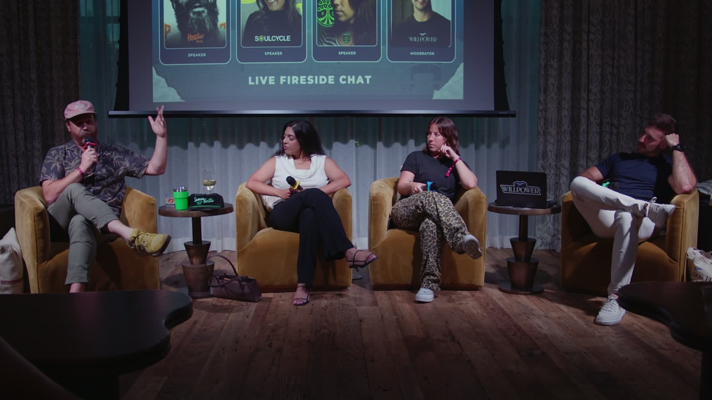

They set out 50 parking spots. 320 Land Cruisers came
Howler did a collab with Toyota Land Cruiser. Not Toyota. Land Cruiser, specifically.
It took about four years. Halfway through the conversation Toyota discontinued the thing, so Rick figured it was dead. Two years later they brought it back and everyone scrambled.
They threw the launch at Central Machine Works in East Austin and set aside a lot up front for vintage cars. About 50 spots. Rick figured maybe 70 would turn up.
320 came! People parking blocks away.
And here is the part he was careful about. That crowd was never his.

The Land Cruiser has been around since the late 40s. Seventy-odd years of die-hards already existed before Howler showed up.
"It's not about us. It's that here was this existing cult, and we got the privilege of tapping into it."
Instant accreditation. Then you leave. He said it plainly: "we get to be in this world for a hot second. And now we're out."
Know who you are not, then make a child
I asked Rick how you protect your DNA when a partnership could dilute you.
He threw out the question and reframed it. Figure out who you are. Then figure out who you are NOT, which he thinks matters more.
Go in wishy-washy and you get Kleenex sponsoring a NASCAR car, and the audience can smell it.
His actual mechanic is better than overlap. "What we have to do is make a child, and that child is where these two things can coexist."
You do not need a shared audience. You need a third thing that could only exist because both of you showed up.
Two years of 8:30 breakfasts for one jersey
Megan runs brand and merchandise at Austin FC, and the jersey is 80% of the business. Every kit runs on a two year cycle, so in 2025 she is living in 2027.
The Armadillo Kit came out of Armadillo World Headquarters, an Austin venue that no longer exists. It is where "Keep Austin Weird" was born.
They worked with them for two years before the jersey shipped.
Breakfast at 8:30 with the founder, who is in his 80s, his wife, and another woman who worked at the venue. For two years. Just learning why the culture here is the way it is.
Most brands would have licensed the logo and moved on.
Two years.
Austin FC now has a live armadillo at matches. He is fine, before you ask.
"We hope you like us"
This is the line from Megan I keep chewing on.
When Austin FC opened Q2 Stadium they were effectively the only pro team in town. They could have leaned on it.
They went the other way. "We don't want you to come into our doors because we're your only option. We want you to feel seen."
Which is why the partner list is mostly local. Yeti. No Comply, the skate shop, twice. Howler for four seasons, which they called a Joint Adventure (Rick broke his thumb on one).
When they brought Adidas Skateboarding in as the authenticator, Megan was nervous a big brand would flatten the local feel. Adidas told them to do what they do best and keep it local.
Namita took the check and the riders hated it
Best answer of the night came when someone in the room asked for a partnership that made everybody go "why."
Rick went first with two words: "Shitty partners."
Then Namita gave a real one, on herself. SoulCycle did a crossover with the Hulu FX show Alien and themed a batch of rides around it.
The riders hated it.
Openly.
"I think they were really confused. Like, what is this? What does this mean? This doesn't sit right with me. I don't care about aliens."
Her read on why: it sounded good, there was a sponsorship check, and they never did the education work that would have made it land.
"Let's not try to get people to eat granola while they're riding a bicycle. That's weird."
Rick Wittenbraker, Howler BrothersHer scorecard is a straight trade
Namita has an actual scorecard for deciding whether a partnership moves forward, and one line on it is refreshingly blunt.
SoulCycle is a legacy brand. It can hand a newer brand its legacy community. In exchange it gets the fresher, hotter brand walking into its studios and some relevance back.
That is the whole trade, said out loud.
She came up through Nasty Gal, then Pinterest, now SoulCycle, and she ran her own fashion brand for a while before sunsetting it, which is why she keeps making room for small brands who cannot afford to sponsor anything.
Her biggest one was at Pinterest. Youth mental health with Surgeon General Vivek Murthy, MTV, the White House, Rare Beauty and Selena Gomez, with an event at the White House. A 15 year old there had built a mural out of what her depression felt like.
That campaign is why Pinterest gets called the positive platform now.
The Barn, and the 75 year olds who never left
SoulCycle's oldest studio is out in Bridgehampton and they call it the Barn. The riders there have been going since the beginning. Plenty of them are in their seventies.
So Namita built them a Wellness Weekend, now annual. Lymphatic drainage massages, luxury facials, then a ride, then a yogurt from some brand nobody has heard of yet.
Loyalty rewarded on purpose, and the new brands get discovery out of it. Both sides fed in one weekend.
Howler funded a dive bar collab and paid for the privilege
Donn's Depot is a dive four blocks from the Howler office. They have their holiday parties there.
So they did a collab with it. Rick is clear that there is "zero reason on the spreadsheet why that makes sense." Bring it to a normal company and you get fired before it gets approved.
Then it gets better.
Howler let Donn's sell all the inventory four days before Howler launched it, and gave them 30 day terms. Howler essentially financed the whole thing for a bar.
"Let's tell more of a love story than a brain story."
Rick Wittenbraker, Howler BrothersData looks backwards
Rick cut in near the end with the thing I would put on a wall, and it was aimed straight at the early stage people in the room.
Somebody went to one SoulCycle class or one match and had the best night of their year. They are telling everyone. In the analytics they show up as churn.
She might have saved up for that one class. A friend might have brought her.
"The data is very helpful, but data looks backwards. And if we're going to grow and look forward, we have to also use our heart and listen."
Rick Wittenbraker, Howler BrothersMegan's version is a discipline. Austin FC runs a match day survey, then actually changes things in the stadium so fans can see the change. She calls it evidence of evolution.
They rebuilt the brand's tone and voice at the start of the season and pulled in ticket coordinators to do it. People who are the face of the brand on the phone every day and never get asked.
Reigning Champ, and the town with no three stripes
Megan's first ever collab was with Reigning Champ out of Vancouver. Whoever won MLS Cup got to do a piece with them.
Portland Timbers was the first. The product could not have been simpler: "Reigning Champ," the club crest, the MLS Cup. That is it.
Portland is an Adidas and Nike town, and everything the Timbers made carried three stripes. That pop-up sold out in five or ten minutes, because fans could finally wear their club without wearing a competitor's logo.
They ran that program for about eight years, then Reigning Champ got too busy. "And good for them."
How to walk up to a brand this size
Someone asked how a small brand approaches people like this without feeling out of their league. Rick's answer was a checklist.
Do your homework. Then ask questions. What is important to you, what are you trying to achieve, where do you need help.
Then bring what you actually have. If a global brand is weak on local credibility, that is your opening, and it will never show up on their spreadsheet.
Megan's version: fill a category nobody is serving, or serve it completely differently, and tell her why. What she wants is access to a customer she cannot reach, and she is offering the same back.
Then the room pitched
We closed by making everybody build a partnership on the spot. Three teams pitched, judged on uniqueness and feasibility.
Spice Up Your Damn Life won. A dating show crossed with LSKD, Momofuku, Love Volleyball, Compass and AG1, where athletes take a bite of chili crunch before giving their hot take.
Joel's justification is the most honest thing anyone said all night. Sometimes you sit in a room with a bunch of people who have brands, and you just want to do something together.
JP Morgan picked up the bill. Soho House made it look effortless.
What to take home
- Write down who you are NOT before you take a single meeting. Rick thinks that half is more important, and it is the half nobody does.
- Stop hunting for audience overlap. Make a child. Build the third thing that only exists because both brands showed up.
- Borrowed cults beat built ones for speed. Land Cruiser had 70 years of die-hards. Howler got instant validation, then left.
- Two years of breakfasts produced a jersey that carries 80% of the business. Depth of research is a moat when everyone else is licensing a logo.
- Namita's scorecard names the trade out loud: legacy community for fresh relevance. If you cannot say what each side gets, it is a sponsorship, and say so.
- The Alien ride is a free lesson. A check plus a cool-sounding tie-in with no education on why equals confused customers.
- Do the Donn's Depot deal sometimes. Some partnerships pay in the thing you cannot metric, and the spreadsheet will always vote no.
- Data looks backwards. Your best customer might read as churn. Growth Through Community.